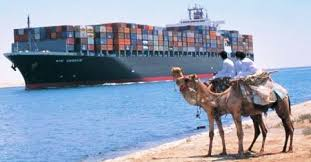
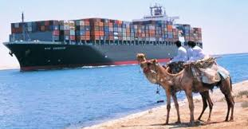

The canal allows passage of ships up to 20 m (66 ft) draft or 240,000 deadweight tons and up to a height of 68 m (223 ft) above water level and a maximum beam of 77.5 m (254 ft) under certain conditions.[77][78] The canal can handle more traffic and larger ships than the Panama Canal, as Suezmax dimensions are greater than both Panamax and New Panamax. Some supertankers are too large to traverse the canal. Others can offload part of their cargo onto a canal-owned boat to reduce their draft, transit, and reload at the other end of the canal.
The canal has no locks because of the flat terrain, and the minor sea level difference between each end is inconsequential for shipping. As the canal has no sea surge gates, the ports at the ends would be subject to the sudden impact of tsunamis from the Mediterranean Sea and Red Sea, according to a 2012 article in the Journal of Coastal Research.[79]
As of July 2015, the canal was too narrow for free two-way traffic, so ships pass in convoys and they use bypasses. The by-passes are 78 km (48 mi) out of 193 km (120 mi) (40%). From north to south, they are: Port Said by-pass (entrances) 36.5 km (23 mi), Ballah by-pass & anchorage, 9 km (6 mi), Timsah by-pass 5 km (3 mi), and the Deversoir by-pass (northern end of the Great Bitter Lake) 27.5 km (17 mi). The bypasses were completed in 1980. Typically, it takes a ship 12 to 16 hours to transit the canal. The canal's 24-hour capacity is about 76 standard ships.
 
